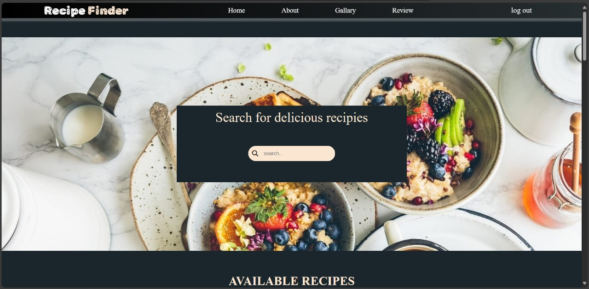
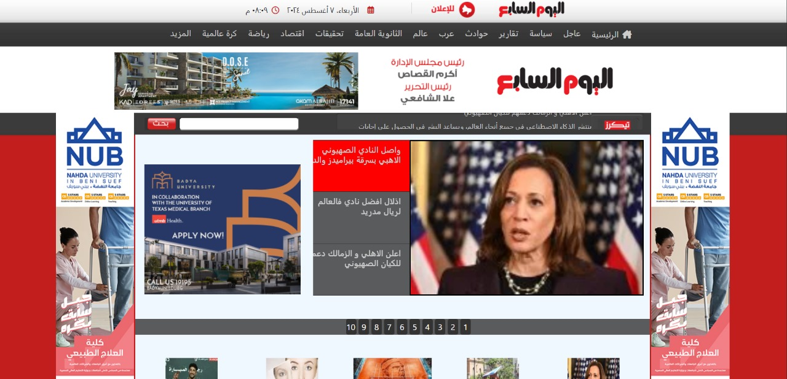
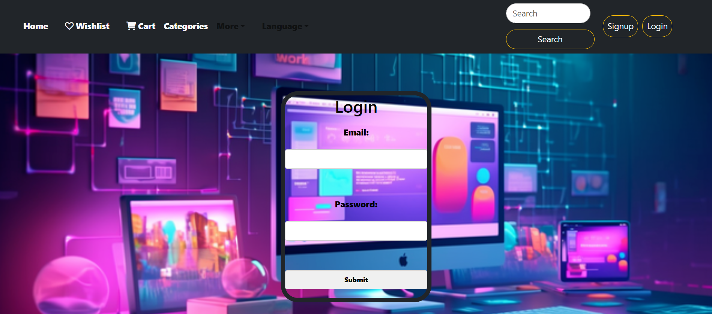
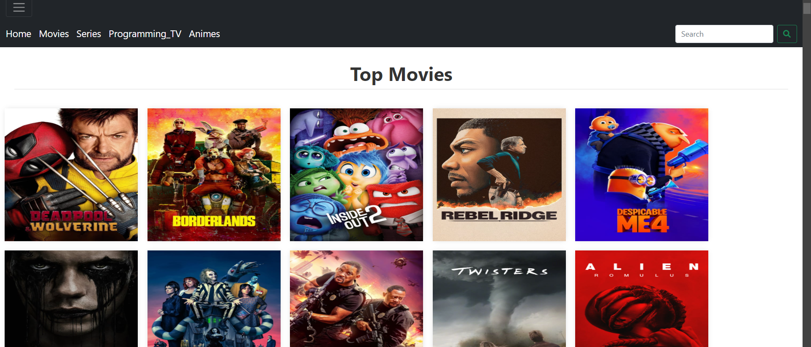

Mostafa is a passionate Frontend Developer with a strong focus on creating visually appealing and user-friendly websites. He has a background in design, which allows him to bridge the gap between aesthetics and functionality.
What I Do!
Web Development
I create responsive and user-friendly websites using modern technologies. My focus is on delivering a seamless user experience.
UI/UX Design
I design intuitive user interfaces and user experiences that enhance customer satisfaction and engagement.
Frontend Development
With expertise in HTML, CSS, and JavaScript, I build dynamic web applications that are visually appealing and functional.
Responsive Design
I ensure that all my projects are mobile-friendly and accessible on various devices, providing a consistent experience across platforms.
Collaboration
I work closely with clients and teams to understand their needs and deliver tailored solutions that meet their business goals.
About Mostafa
Mostafa is a passionate Frontend Developer with a strong focus on creating visually appealing and user-friendly websites. He has a background in design, which allows him to bridge the gap between aesthetics and functionality.
Professional Background
With over 3 years of experience in web development, Mostafa has worked on various projects, including e-commerce sites, personal blogs, and corporate websites. He thrives in collaborative environments and enjoys working closely with designers and backend developers to deliver seamless web solutions.
Skills
HTML, CSS, JavaScript
Frameworks: React, Vue.js
Responsive Design Techniques
Version Control: Git
Performance Optimization
Interests
Outside of work, Mostafa enjoys exploring new technologies, contributing to open-source projects, and staying up-to-date with the latest trends in web development and design.
Contact
If you'd like to get in touch with Mostafa, feel free to reach out via email.
Certifications
Mostafa has earned several certifications that demonstrate his expertise in web development and design. Here are some of his notable certifications:
Certified Frontend Developer
Issued by FreeCodeCamp - 2023
This certification validates proficiency in HTML, CSS, JavaScript, and popular frameworks like React and Vue.js.
Continuous Learning
Mostafa is committed to lifelong learning and regularly participates in workshops and online courses to stay updated with the latest industry trends and technologies.




FrontEnd Development Skills
FrontEnd development involves creating the visual and interactive aspects of websites and applications. Here are some key skills and technologies used in this field:
HTML/CSS: The foundational languages for structuring and styling web content.
JavaScript: The programming language that enables dynamic content and interactivity on websites.
Frameworks and Libraries:
React: A popular library for building user interfaces, especially for single-page applications.
Angular: A platform for building mobile and desktop web applications.
Vue.js: A progressive framework for building user interfaces.